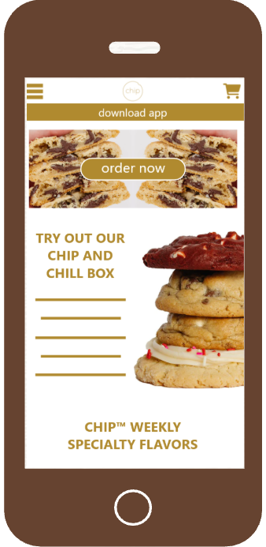

UX / Product Design · Oct 2022 – Dec 2023
Wireframed a full mobile app redesign for Chip Cookies using Adobe XD, applying UX principles to create a more intuitive and convenient ordering experience.
Context
Chip Cookies is a gourmet cookie company with a loyal following, but their mobile website made ordering difficult. With smartphones now the primary way people discover and order food, a clunky mobile experience meant lost customers and missed revenue.
This project set out to redesign the Chip Cookies mobile site from scratch using established UX principles, user research, and a fully interactive Adobe XD prototype.
The Challenge
"How might I redesign Chip Cookies' mobile experience to make ordering faster, more intuitive, and enjoyable — driving customer retention and growth?"
Goals
Grow the Customer Base
Make Chip discoverable and appealing to new customers through a polished, intuitive mobile presence that reflects the quality of the product.
Streamline Ordering
Reduce friction in the ordering flow — fewer taps, clearer navigation, and a checkout process that gets users from craving to confirmed in seconds.
Increase Website Traffic & Retention
Create an experience users want to return to, one that surfaces weekly specialty flavors, makes reordering easy, and gets people talking about Chip.
Target Audience
Syd · 41 · Stay-at-home Dad
Sweet Tooths
Time strapped parents who want to treat their kids without the hassle of long lines or confusing apps. Frustrated by non-intuitive technology and processes that take time away from family.
Marshall · 16 · Student
Midnight Munchers
Trend-conscious students discover brands through their phones. They want fast, visually appealing experiences that don't slow them down.
Design Principles
Design for familiarity
Users spend most of their time on other apps. The redesign mirrors patterns from popular food ordering apps so new users feel at home immediately.
Make targets easy to hit
Larger tap targets, thumb-friendly placement, and a prominent "Order Now" CTA reduce errors and speed up interaction — especially on mobile.
Flexibility & Efficiency of Use
The redesign accommodates both first-time visitors and returning customers — surfacing weekly specialties for browsers while making reordering fast for regulars.
Prototype
The full interactive prototype was built in Adobe XD — covering the home screen, menu browsing, product detail, cart, and a complete checkout flow with delivery, pickup, and nationwide shipping options.

Outcome
A fully interactive mobile prototype and a pitch deck presenting the business case for the redesign to stakeholders — demonstrating how improved UX directly drives customer retention and revenue.
Takeaways
UX principles: Applying Jakob's Law, Fitt's Law, and Nielsen's heuristics wasn't purly academic — each decision directly reduced friction in the ordering flow and made the prototype feel natural.
Know your user before you design: Building out Syd and Marshall as distinct personas forced us to make real tradeoffs — the design had to work for a time-strapped parent and a trend-savvy teen simultaneously.
A prototype is worth a thousand words: Walking stakeholders through a live, clickable prototype made the business case immediately tangible — no imagination required.